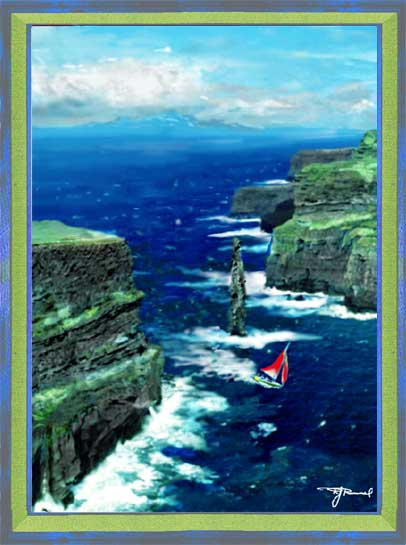

Bravado. Paintage; watercolor. I've always been impressed by the risks that some sailboaters will take, as in the paintage I composed here. Of course, this gave me an excuse to play around with sea, rocky cliffs, and sky.
Next
painting.
Return
to Gallery 1
Home